Residual Analysis of spatial point process models using Bayesian methods
Niharika Reddy Peddinenikalva
2024-07-10
Source:vignettes/articles/2d_lgcp_residuals.Rmd
2d_lgcp_residuals.Rmd
# Load function definitions
source(system.file(
file.path("misc", "2d_lgcp_residuals_functions.R"),
package = "inlabru"
))Introduction
Point processes are useful for spatial data analysis and have wide applications in ecology, epidemiology, seismology, computational neuroscience, etc. Residual analysis is an effective assessment method for spatial point processes, which commonly takes a frequentist approach.
In this vignette, we will calculate residuals of some of the models from https://inlabru-org.github.io/inlabru/articles/2d_lgcp_covars.html using a Bayesian approach to the residual methods in “Residual Analysis for spatial point processes” (Baddeley et al).
Theory of Residuals for Spatial point process models
Consider a spatial point pattern of points in a bounded region of . For a model of a spatial point process with probability density and parameter , the innovation process of the model is defined by Here, is the expected number of points of the fitted model in the bounded subset of . Innovations satisfy .
Given data of the model and that the parameter estimate is , the raw residuals are given by
Increments of the innovation process and raw residuals of the Poisson processes are analogous to errors and raw residuals of linear models respectively.
Types of Residuals
We can scale the raw residual by scaling the increments of . \ The -weighted innovations are given by This leads to the -weighted residuals Since the innovation has mean 0, a true model would yield Changing the choice of the weight function , yields different types of residuals.
Motivation for choice of residuals
The scaling residuals are nothing but the raw residuals and hence depict the residual data as is. However, the Pearson residuals use a weighted function so this helps to obtain normalised residuals since the denominator accounts for variance of the residuals and hence makes it reliable for any sample size.
The use of the inverse residual in this project is less clear. However, we do know that it is easier to compute this residual since we have the GNZ formula to estimate the value of $h(u) = for any value .
For notation’s sake in this discussion, let indicate the weight function for scaling, inverse and Pearson residuals respectively. Then, . We can also see that and , so the values of the Pearson residuals would lie somewhere between the other two residuals. So, in our case, the inverse residuals would not be very useful, but we do find that they are easier to compute by hand in terms of estimates.
Computation of Residuals
In this vignette, the residuals of some models from https://inlabru-org.github.io/inlabru/articles/2d_lgcp_covars.html
are computed using a Bayesian approach of the residuals described above.
This is done using the inlabru package. The models used
are:
Model 1 (Vegetation Model): The model is defined such that the gorilla nests have vegetation type as a fixed covariate.
Model 2 (Elevation Model): The model is defined such that the gorilla nests have elevation as a continuous variable.
Model 3 (Intercept Model): The model is defined such that the gorilla nests have a constant effect.
Model 4 (SPDE Smooth type model): The model is defined such that the gorilla nests depend on an SPDE type smooth function.
The functions used to calculate the residuals of these models are given in the Code appendix at the end of this vignette.
Loading gorillas data
This vignette uses the gorillas dataset from the
“inlabru” package in R for modelling spatial Poisson processes. Here,
the ``inlabru” package uses Latent Gaussian Cox Processes to model the
data using different model definitions.
# Load data
data(gorillas, package = "inlabru")
nests <- gorillas$nests
mesh <- gorillas$mesh
boundary <- gorillas$boundary
gcov <- gorillas$gcovInitially, the set
is defines as
,
where
is the object boundary. The function
prepare_residual_calculations() is defined to compute a
data frame of observations
and sample points
to compute the residual, a matrix A_sum that helps to
calculate the summation term of the residual and a matrix
A_integrate that helps to calculate the integral term of
the residual.
The function residual_df is defined to compute all three
types of residuals for a given model and choice of
given a set of observations.
# Define the subset B
B <- boundary
# Store the required matrices and data frames for residual computation
As <- prepare_residual_calculations(
samplers = B, domain = mesh,
observations = nests
)Assessing 4 models with residuals
Vegetation Model
This model is taken from https://inlabru-org.github.io/inlabru/articles/2d_lgcp_covars.html . The model is defined such that the gorilla nests have vegetation type as a fixed covariate.
The code chunk below shows how the model is defined by
lgcp() and also displays the model in the form of a plot.
The residuals of the model are also computed where
.
# Define the vegetation model
comp1 <- coordinates ~
vegetation(gcov$vegetation, model = "factor_contrast") + Intercept(1)
fit1 <- lgcp(comp1, nests,
samplers = boundary,
domain = list(coordinates = mesh)
)
# Display the model
int1 <- predict(fit1,
newdata = fm_pixels(mesh, mask = boundary, format = "sp"),
~ exp(vegetation + Intercept)
)
ggplot() +
gg(int1) +
gg(boundary, alpha = 0, lwd = 2) +
gg(nests, color = "DarkGreen")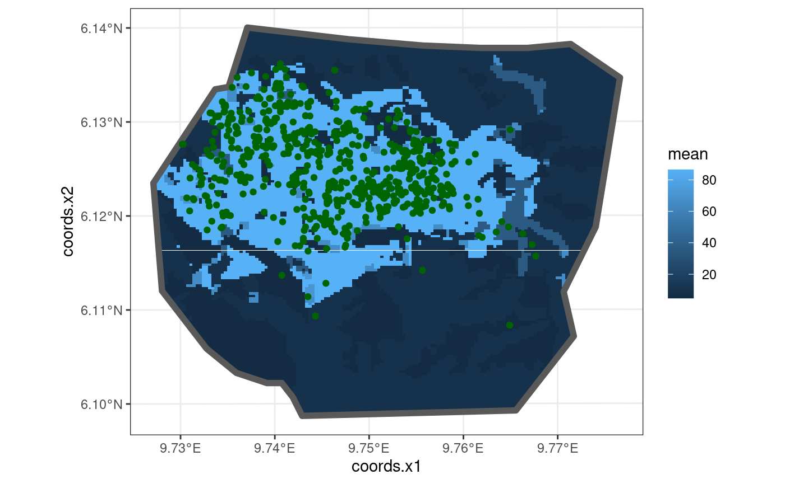
# Calculate the residuals for the vegetation model
veg_res <- residual_df(
fit1, As$df, expression(exp(vegetation + Intercept)),
As$A_sum, As$A_integrate
)
knitr::kable(edit_df(veg_res, c("Type", "mean.mc_std_err", "sd.mc_std_err", "median")))| mean | sd | q0.025 | q0.5 | q0.975 | |
|---|---|---|---|---|---|
| Scaling_Residuals | 0.6922716 | 24.506897 | -53.299348 | 0.2103252 | 44.159717 |
| Inverse_Residuals | 0.3556998 | 1.420467 | -1.919529 | 0.3027912 | 3.073044 |
| Pearson_Residuals | 0.7007565 | 4.516740 | -6.676342 | 0.6785729 | 8.608234 |
Note: The data frame produced by residual_df()
originally contains the columns Type,
mean.mc_std_err, sd.mc_std_err and
median which have been removed in all the tables in the
vignette to highlight only essential and non-recurring data. This
editing of the data frames is done by the function
edit_df.
Elevation model
This model is also taken from https://inlabru-org.github.io/inlabru/articles/2d_lgcp_covars.html . The model is defined such that the gorilla nests have elevation as a continuous variable.
The code chunk below shows how the model is defined by
lgcp() and also displays the model in the form of a
plot.
# Define the Elevation model
comp2 <- coordinates ~ elev(elev, model = "linear") +
mySmooth(coordinates, model = matern) + Intercept(1)
fit2 <- lgcp(comp2, nests,
samplers = boundary,
domain = list(coordinates = mesh)
)
# Display the model
int2 <- predict(
fit2,
fm_pixels(mesh, mask = boundary, format = "sp"),
~ exp(elev + mySmooth + Intercept)
)
ggplot() +
gg(int2) +
gg(boundary, alpha = 0) +
gg(nests, shape = "+")The residuals of the model when are given below:
| mean | sd | q0.025 | q0.5 | q0.975 | |
|---|---|---|---|---|---|
| Scaling_Residuals | -29.819717 | 27.325534 | -93.15855 | -27.420649 | 23.163264 |
| Inverse_Residuals | -8.431083 | 1.525452 | -10.84421 | -8.599661 | -5.270566 |
| Pearson_Residuals | -11.481605 | 3.947605 | -19.06741 | -11.284608 | -4.293900 |
Intercept Model
This model is also taken from https://inlabru-org.github.io/inlabru/articles/2d_lgcp_covars.html . The model is defined such that the gorilla nests have a constant effect.
The code chunk below shows how the model is defined by
lgcp() and also displays the model in the form of a plot.
The residuals of the model are also computed where
.
# Define the Intercept model
comp3 <- coordinates ~ Intercept(rep(1, nrow(.data.)))
fit3 <- lgcp(comp3, nests,
samplers = boundary,
domain = list(coordinates = mesh)
)
# Display the model
int3 <- predict(
fit3,
fm_pixels(mesh, mask = boundary, format = "sp"),
~ exp(Intercept)
)
ggplot() +
gg(int3) +
gg(boundary, alpha = 0) +
gg(nests, shape = "+")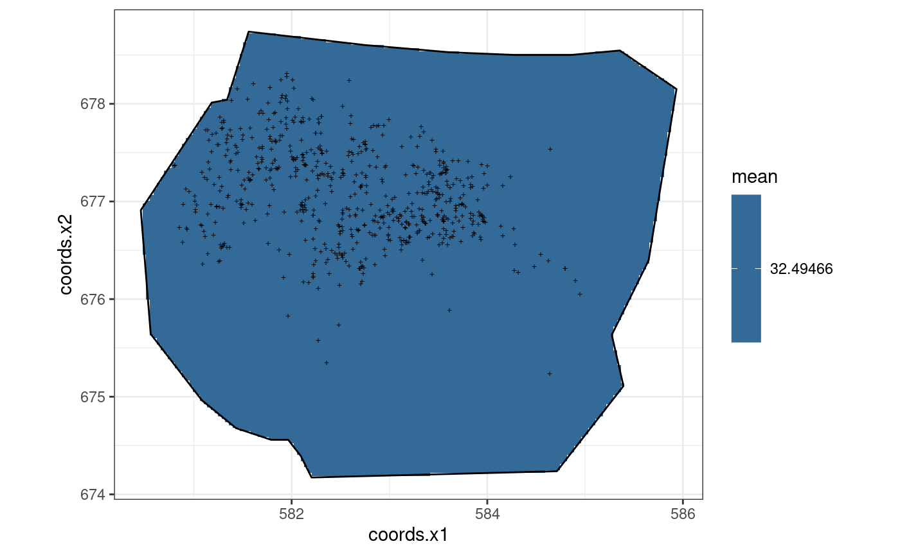
The residuals of the model when are given below:
| mean | sd | q0.025 | q0.5 | q0.975 | |
|---|---|---|---|---|---|
| Scaling_Residuals | -1.8324359 | 27.0461613 | -51.326556 | -1.1571571 | 40.674290 |
| Inverse_Residuals | -0.0223098 | 0.8204348 | -1.460522 | -0.0354789 | 1.333213 |
| Pearson_Residuals | -0.2238747 | 4.7068229 | -8.658140 | -0.2026194 | 7.363930 |
Smooth Model
This model is also taken from https://inlabru-org.github.io/inlabru/articles/2d_lgcp_covars.html . The model is defined such that the gorilla nests depend on an SPDE type smooth function.
The code chunk below shows how the model is defined by
lgcp() and also displays the model in the form of a plot.
The residuals of the model are also computed where
.
# Define the Smooth model
comp4 <- coordinates ~ mySmooth(coordinates, model = matern) +
Intercept(1)
fit4 <- lgcp(comp4, nests,
samplers = boundary,
domain = list(coordinates = mesh)
)
# Display the model
int4 <- predict(
fit4,
fm_pixels(mesh, mask = boundary, format = "sp"),
~ exp(mySmooth + Intercept)
)
ggplot() +
gg(int4) +
gg(boundary) +
gg(nests, shape = "+")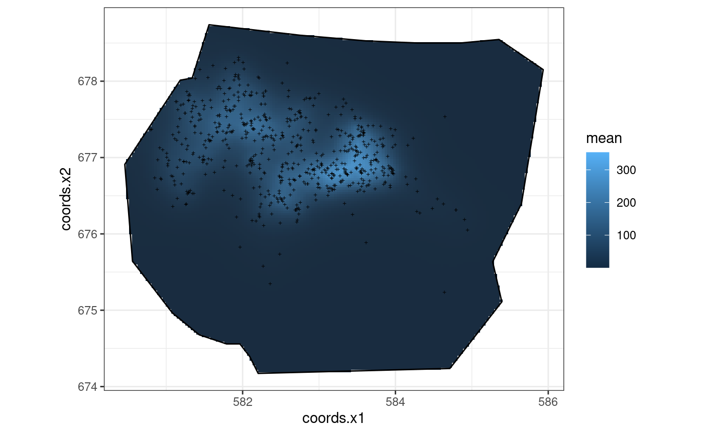
The residuals of the model when are given below:
| mean | sd | q0.025 | q0.5 | q0.975 | |
|---|---|---|---|---|---|
| Scaling_Residuals | -27.882462 | 26.775099 | -79.78533 | -26.648559 | 29.965363 |
| Inverse_Residuals | -8.898096 | 1.511736 | -10.95189 | -9.082424 | -5.357823 |
| Pearson_Residuals | -12.173455 | 3.645282 | -18.84778 | -12.473900 | -5.145596 |
Redefining the set B
Consider defining a new type of set
which consists of two subpolygons within the boundary. This is done by
the partition() function which divides a polygon into grids
based on number of rows and columns or by a desired resolution. The code
chunk below demonstrates a use of the function for dividing the polygon
and calculating the residuals for this choice of
.
# Create a grid for B partitioned into two
B1 <- partition(samplers = boundary, nrows = 1, ncols = 2)
plot(B1, main = "Two partitions of B")
As1 <- prepare_residual_calculations(
samplers = B1, domain = mesh,
observations = nests
)
# Residuals for the vegetation model
veg_res2 <- residual_df(
fit1, As1$df, expression(exp(vegetation + Intercept)),
As1$A_sum, As1$A_integrate
)
knitr::kable(edit_df(veg_res2, c(
"Type", "mean.mc_std_err",
"sd.mc_std_err", "median"
)))| mean | sd | q0.025 | q0.5 | q0.975 | |
|---|---|---|---|---|---|
| Scaling_Residuals.1 | 43.147281 | 14.9964404 | 15.989004 | 43.943436 | 71.090450 |
| Scaling_Residuals.2 | -43.686793 | 9.3582984 | -63.126606 | -42.872093 | -27.944426 |
| Inverse_Residuals.1 | 5.199816 | 1.1349989 | 3.232726 | 5.173355 | 7.426963 |
| Inverse_Residuals.2 | -4.895246 | 0.4060817 | -5.457406 | -4.961229 | -3.966448 |
| Pearson_Residuals.1 | 15.356129 | 2.5816104 | 10.264103 | 15.433020 | 20.369716 |
| Pearson_Residuals.2 | -14.943245 | 1.5984762 | -18.274541 | -14.818638 | -12.149500 |
Here, it can be seen that there are two lines of residual data for
each type of residual. This signifies that the residual_df
function has calculated residuals for each partition. To compare these
residuals effectively, a function residual_plot() is
defined that plots the residuals for each corresponding polygon of
B. This is discussed later in the vignette.
Another type of partitioning is considered with three sections of the
region and its residuals are as displayed below:

| mean | sd | q0.025 | q0.5 | q0.975 | |
|---|---|---|---|---|---|
| Scaling_Residuals.1 | 69.369979 | 7.4565165 | 56.0791258 | 69.390197 | 81.806318 |
| Scaling_Residuals.2 | -23.882001 | 15.3603739 | -55.1621200 | -21.688948 | 3.996247 |
| Scaling_Residuals.3 | -46.798046 | 4.6722151 | -58.4959879 | -46.249138 | -39.609966 |
| Inverse_Residuals.1 | 2.831014 | 0.7104182 | 1.4124184 | 2.790192 | 4.161167 |
| Inverse_Residuals.2 | 2.915579 | 0.6802996 | 1.5867600 | 2.910065 | 4.188597 |
| Inverse_Residuals.3 | -5.460240 | 0.0517400 | -5.5551295 | -5.466311 | -5.370861 |
| Pearson_Residuals.1 | 11.440139 | 1.6835905 | 8.1687188 | 11.411891 | 14.303564 |
| Pearson_Residuals.2 | 4.281129 | 2.0130618 | 0.6144713 | 4.471712 | 7.753339 |
| Pearson_Residuals.3 | -15.365591 | 0.8977996 | -17.4552272 | -15.286314 | -13.911556 |
Residuals of models at different resolutions
Consider two more resolutions of
,
given in the plots below. Here we use the resolution
argument instead of nrow and ncol. Due to the
way terra::rast() interprets the arguments, using
resolution doesn’t guarantee complete coverage of the
samplers polygon.
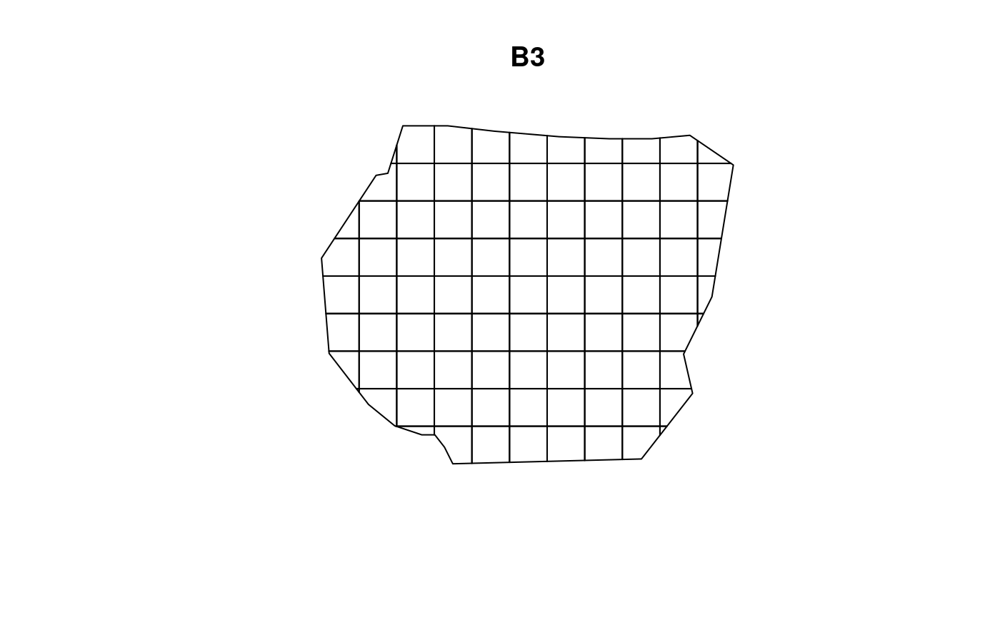
Using these two new choices of
,
the residuals are calculated for all four models at both resolutions
using residual_df().
The functions set_csc() and residual_plot()
are defined to plot the three types of residuals for the model for each
partition in
.
The code chunk below demonstrates how this plotting is done for the
vegetation model at resolution
.
Here, it is useful for each type of residual to have the same colour
scale at both resolutions.
# Residuals of Vegetation model
Residual_fit1_B3 <- residual_df(
model = fit1, df = As3$df,
expr = expression(exp(vegetation + Intercept)), A_sum = As3$A_sum,
A_integrate = As3$A_integrate
)
Residual_fit1_B4 <- residual_df(
model = fit1, df = As4$df,
expr = expression(exp(vegetation + Intercept)), A_sum = As4$A_sum,
A_integrate = As4$A_integrate
)
# Colour scales for each model to cover both resolutions
fit1_csc <- set_csc(rbind(Residual_fit1_B3, Residual_fit1_B4), rep("RdBu", 3))
# Store plots
plotB3_fit1 <- residual_plot(B3, Residual_fit1_B3, fit1_csc, "Vegetation Model")
plotB4_fit1 <- residual_plot(B4, Residual_fit1_B4, fit1_csc, "Vegetation Model")
# comparing the vegetation model
((plotB3_fit1$Scaling | plotB3_fit1$Inverse | plotB3_fit1$Pearson) /
(plotB4_fit1$Scaling | plotB4_fit1$Inverse | plotB4_fit1$Pearson)) +
plot_annotation(title = "Vegetation Model") +
plot_layout(guides = "collect") &
theme(legend.position = "bottom")Comparing different types of residuals for each model
Now, the plots below help to compare the residuals for each model at two resolutions of for each type of residual.
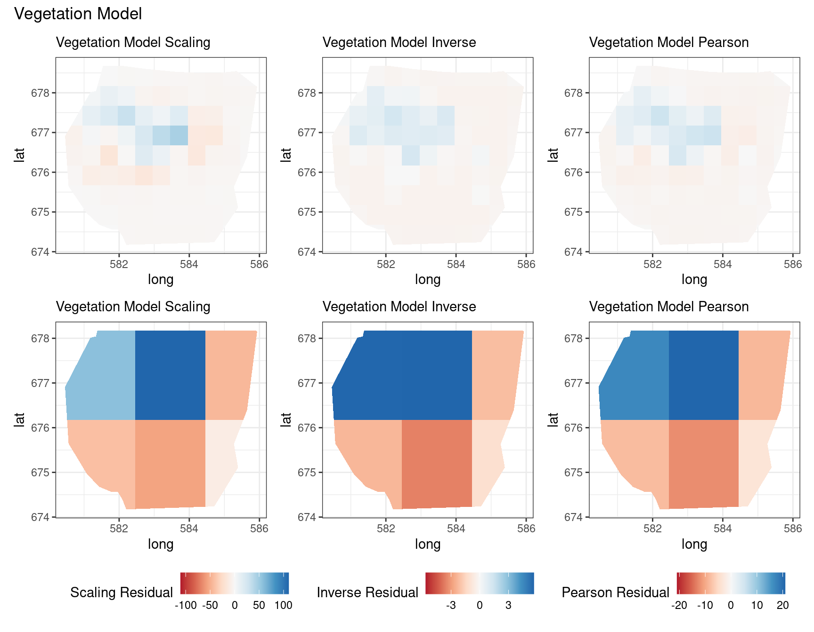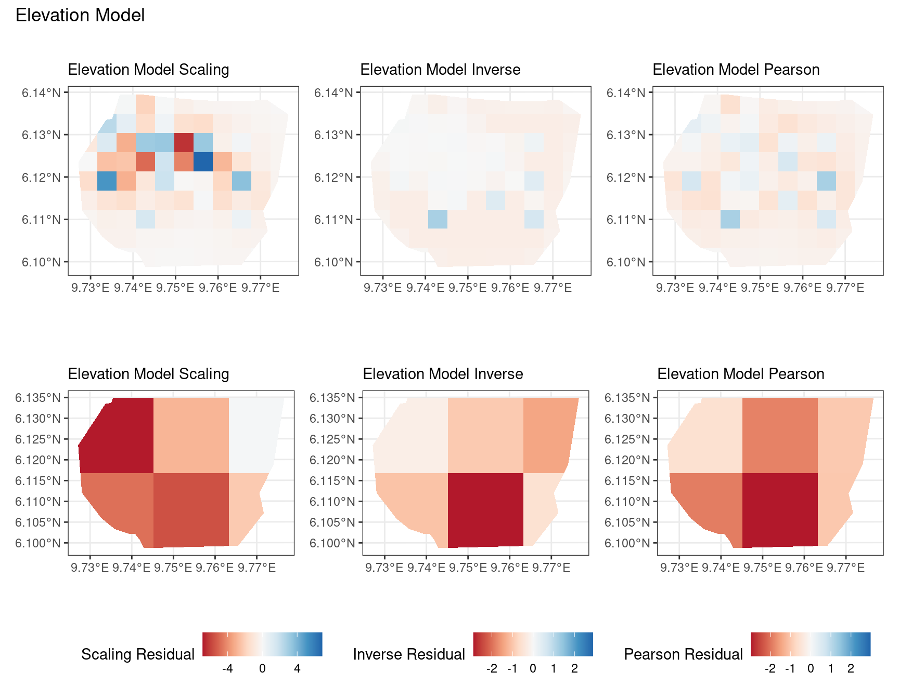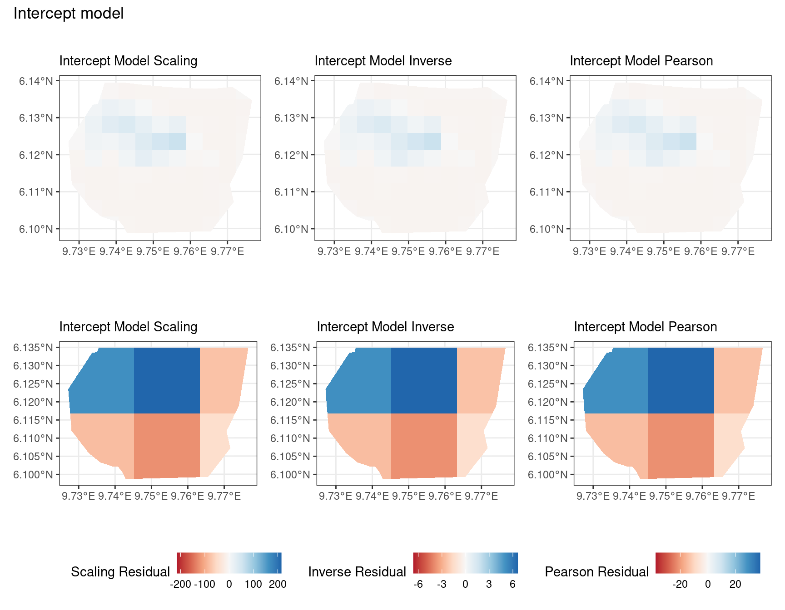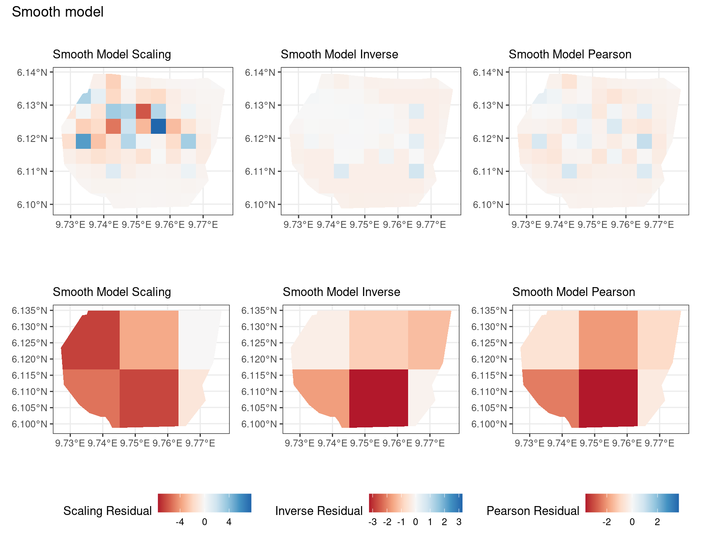
Discussion
In this section, we discuss some of the findings from the output in the code. A relevant point that would be used repeatedly in this discussion is that since the colour scales for the residuals are chosen so that negative and positive values are in hues of red and blue respectively, negative and positive residuals imply an overestimation and underestimation of gorilla nests by the model respectively. Thus, red regions in a plot would imply overestimation of gorilla nests by the model in that region and blue regions in a plot would imply underestimation of gorilla nests by the model in that region.
A common observation for all models is that the scaling residuals seem to have the highest range among the residuals since they are direct interpretations of residuals for all models. Also, the Pearson residuals seem to take values between the scaling and inverse residuals for both resolutions of all four models. However, for almost all types of residuals for each model, the positive and negative residual values are not very extreme for the resolution but these corresponding residual values are more extreme at the resolution for each type of residual. This could be because of the bias in the ``experimental” mode of which is explored at other points in this project.
For the vegetation and intercept model, the regions which have negative and positive residuals remain the same for all residuals at different levels for each type of residual. Also, it seems that the north and north-west region of both models are underestimated by the model while the remaining regions are overestimated by the model at different levels.
For the elevation model, each type of residual has slight variations in negative and positive residuals for corresponding regions in a fixed resolution. This means that different residuals suggest that a particular polygon in overestimated and underestimated by the model. However, this happens only at a few points and is not containing extremes of the residuals in the same regions. The Pearson residuals are supposedly the most reliable in this case as they are normalised residuals. All three types of residuals contain larger proportions of negative residuals which suggest that the model overestimates the gorilla population the region (at different amounts in different regions).
Comparing different models for each type of residual
Another way to compare residuals, is to consider each type of residual separately and plot the residuals for all four models at each resolution. This helps to compare the models for a given type of residual and choice of . Here, it is useful to have the same colour scale for all the 4 models.
The code chunk below demonstrates the code for plotting the “Pearson” residuals when .
# Calculate the residuals for all models at B4
Residual_fit1_B4 <- residual_df(
model = fit1, df = As4$df,
expr = expression(exp(vegetation + Intercept)), A_sum = As4$A_sum,
A_integrate = As4$A_integrate
)
Residual_fit2_B4 <- residual_df(
model = fit2, df = As4$df,
expr = expression(exp(elev + mySmooth + Intercept)),
A_sum = As4$A_sum, A_integrate = As4$A_integrate
)
Residual_fit3_B4 <- residual_df(
model = fit3, df = As4$df,
expr = expression(exp(Intercept)), A_sum = As4$A_sum,
A_integrate = As4$A_integrate
)
Residual_fit4_B4 <- residual_df(
model = fit4, df = As4$df,
expr = expression(exp(mySmooth + Intercept)), A_sum = As4$A_sum,
A_integrate = As4$A_integrate
)
# Set the colour scale
B4res <- rbind(
Residual_fit1_B4, Residual_fit2_B4,
Residual_fit3_B4, Residual_fit4_B4
)
B4csc <- set_csc(B4res, rep("RdBu", 3))
# Plots for residuals of all 4 models with resolution B4
plotB4_veg <- residual_plot(B4, Residual_fit1_B4, B4csc, "Vegetation Model")
plotB4_elev <- residual_plot(B4, Residual_fit2_B4, B4csc, "Elevation Model")
plotB4_int <- residual_plot(B4, Residual_fit3_B4, B4csc, "Intercept Model")
plotB4_smooth <- residual_plot(B4, Residual_fit4_B4, B4csc, "Smooth Model")
# Comparing all models for B4 Pearson residuals
((plotB4_veg$Pearson | plotB4_elev$Pearson) /
(plotB4_int$Pearson | plotB4_smooth$Pearson)) +
plot_annotation("B4 Pearson Residuals") +
plot_layout(guides = "collect") &
theme(legend.position = "bottom")Now, the plots below help to compare all 4 models at a particular choice of and for a chosen residual type.
 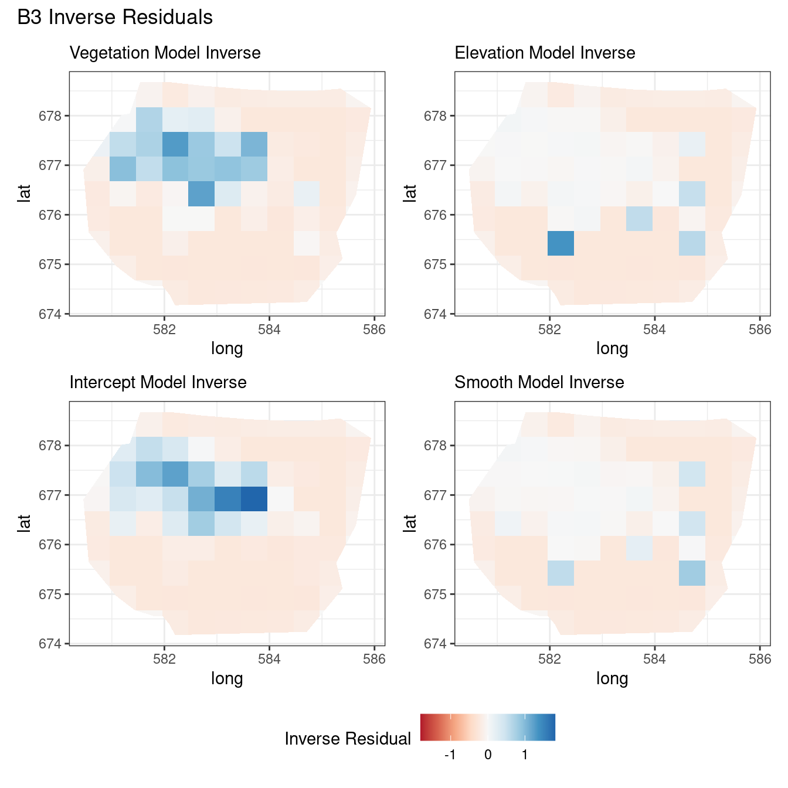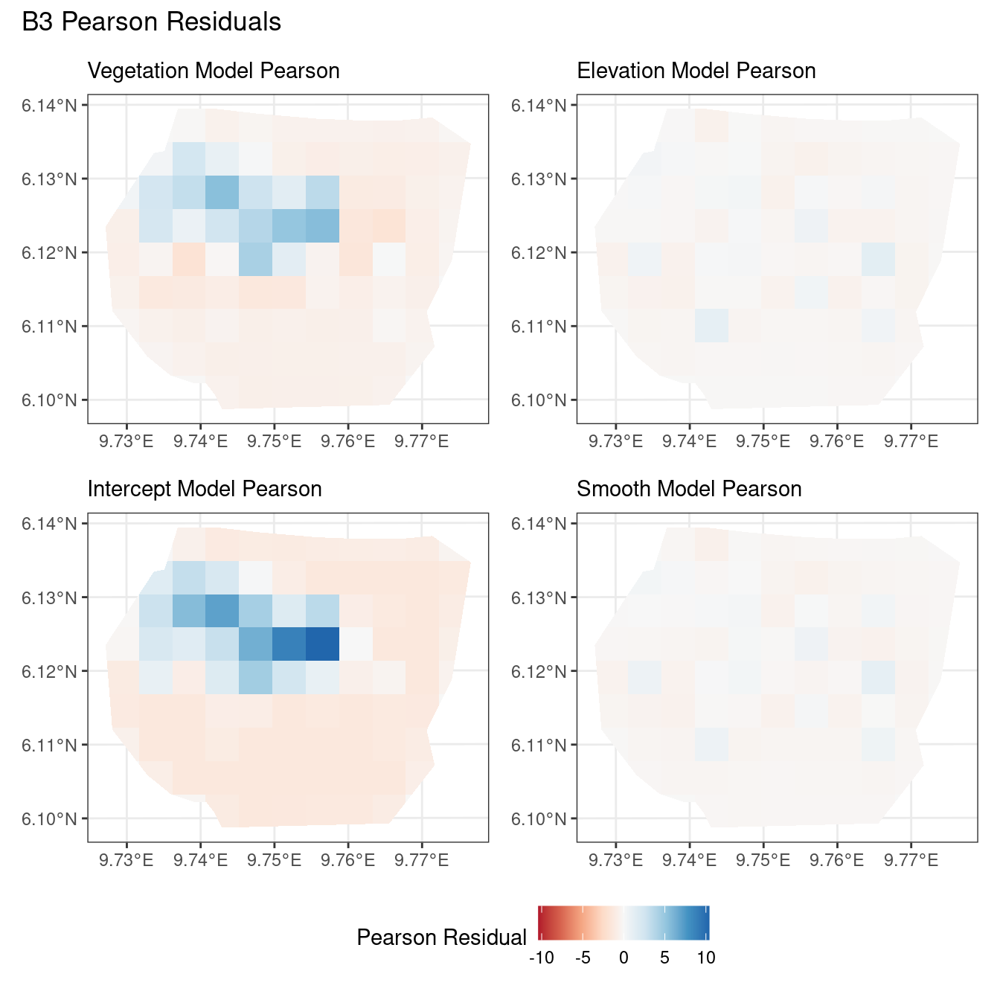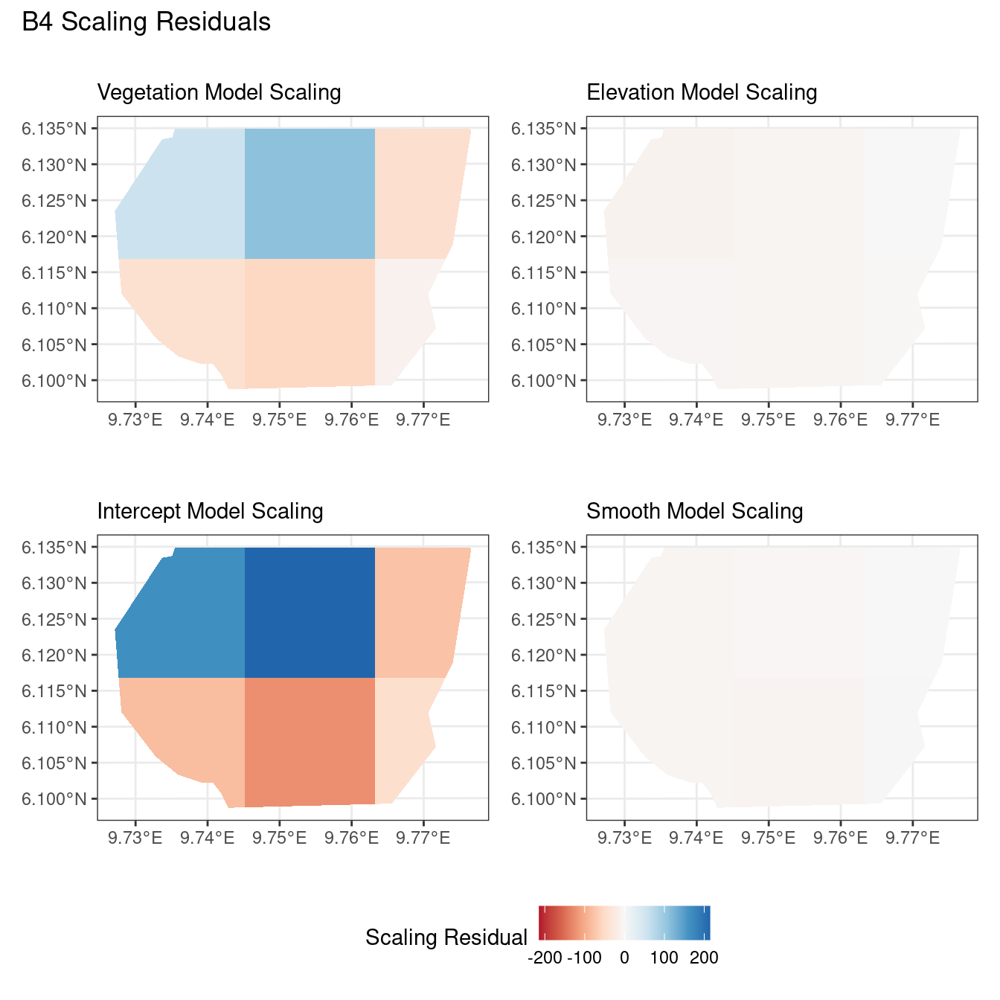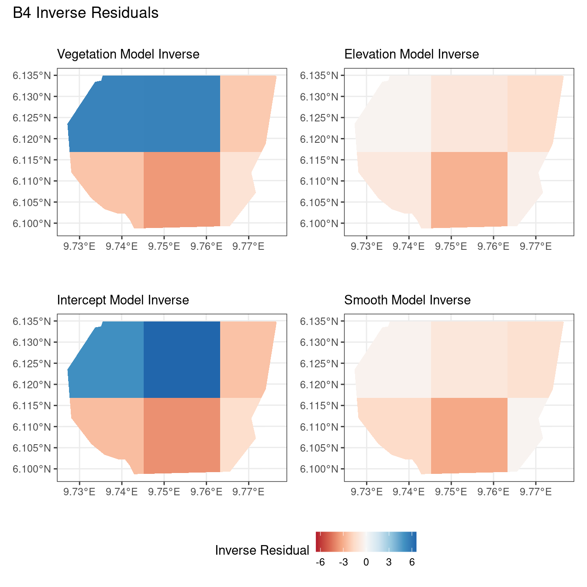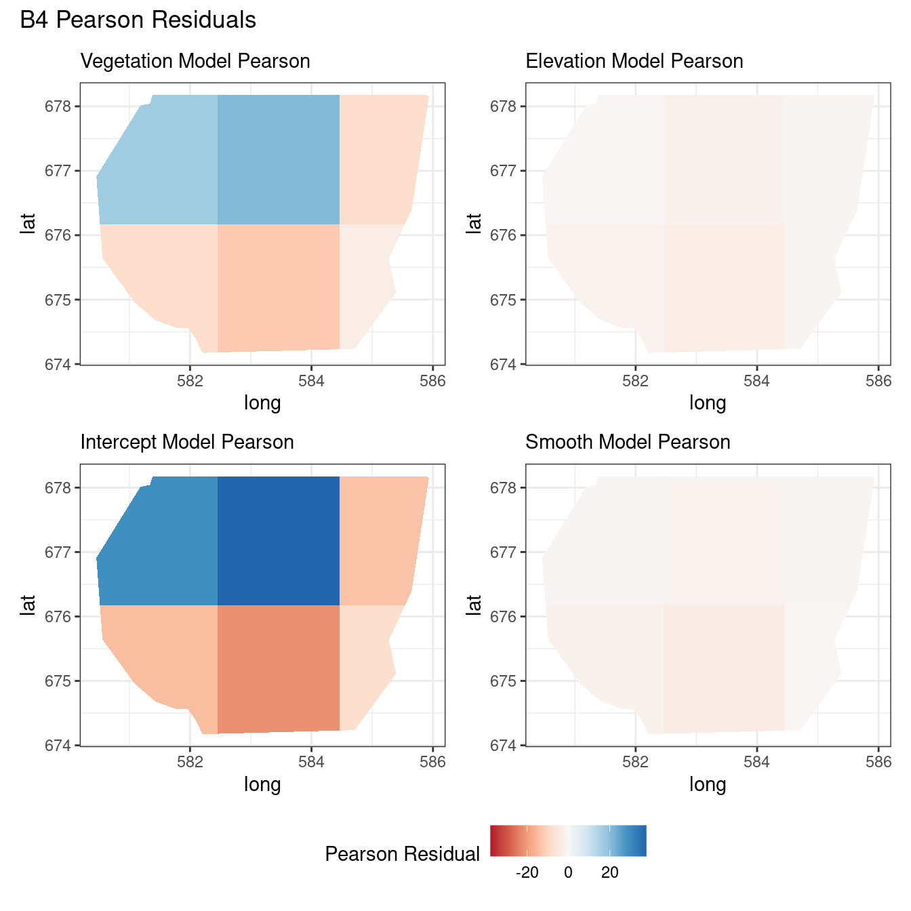
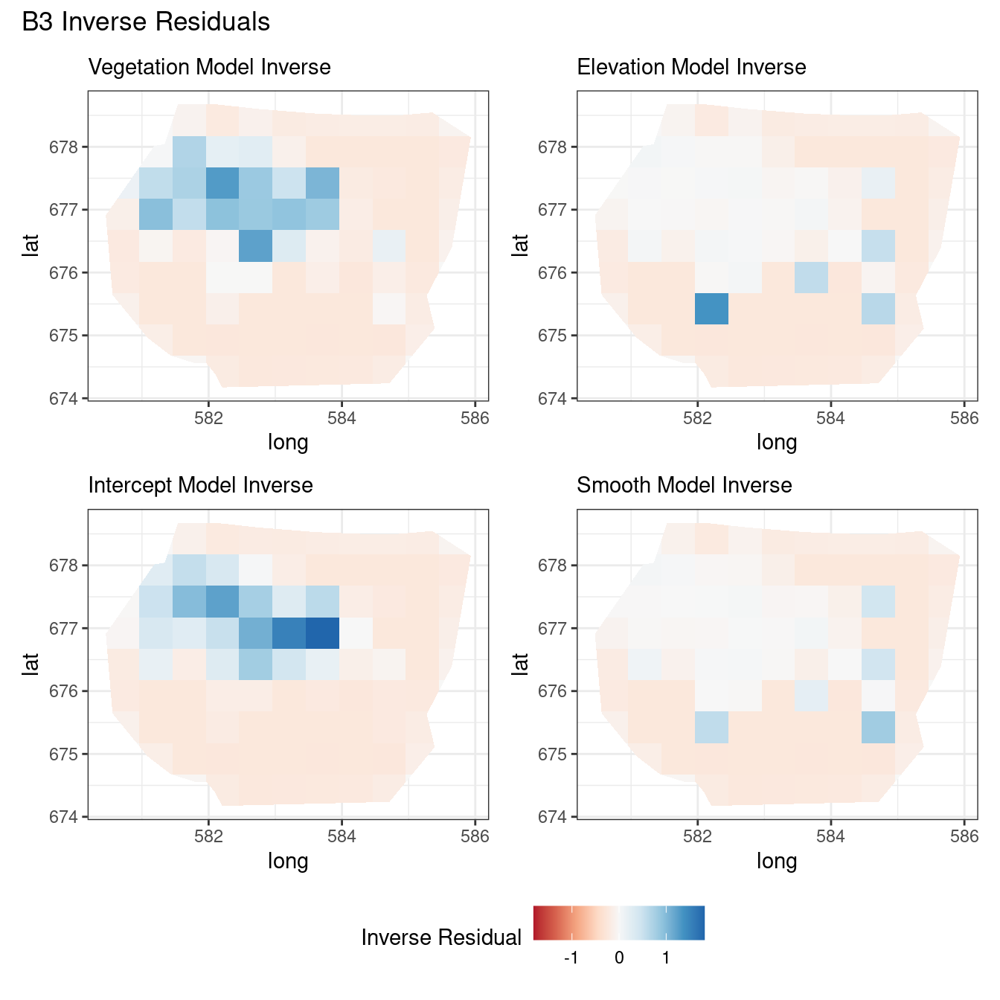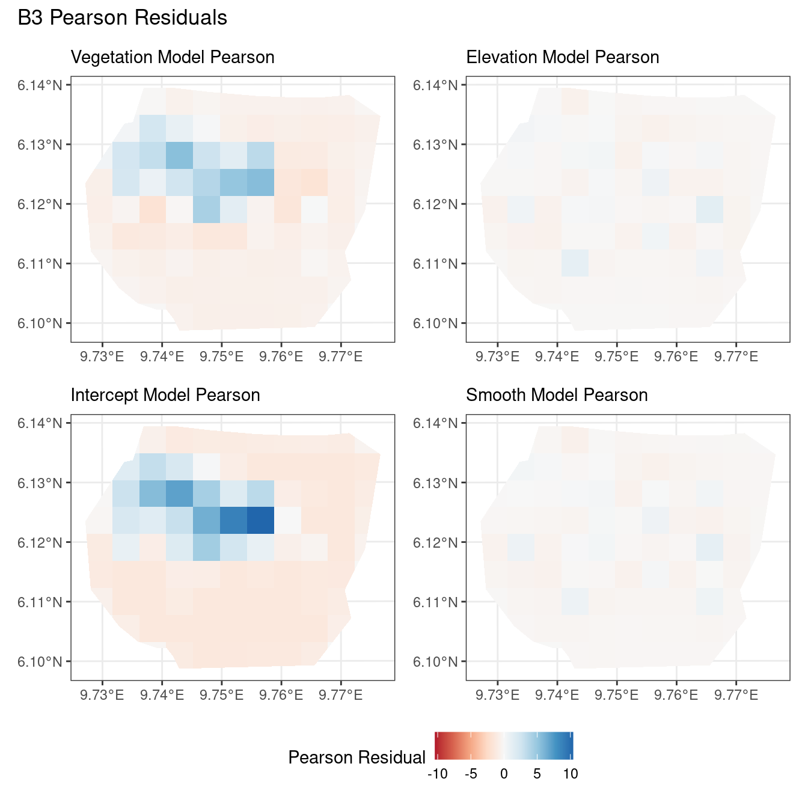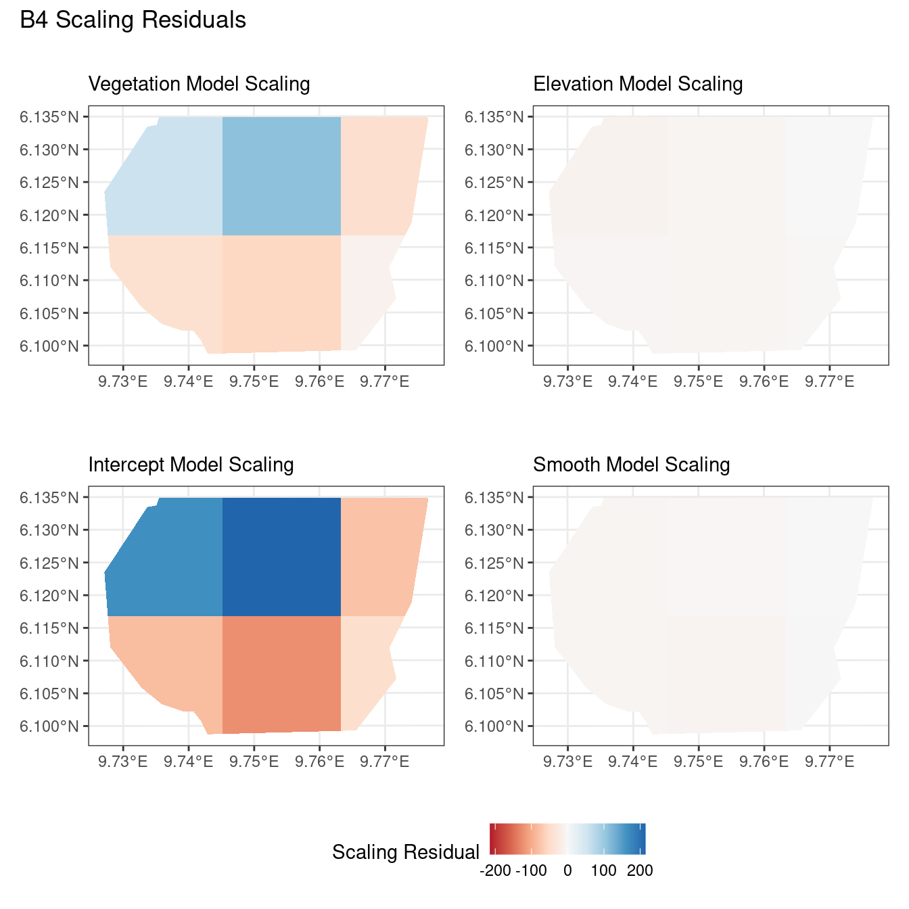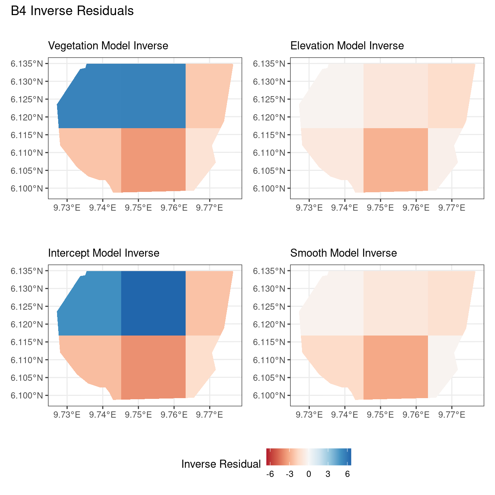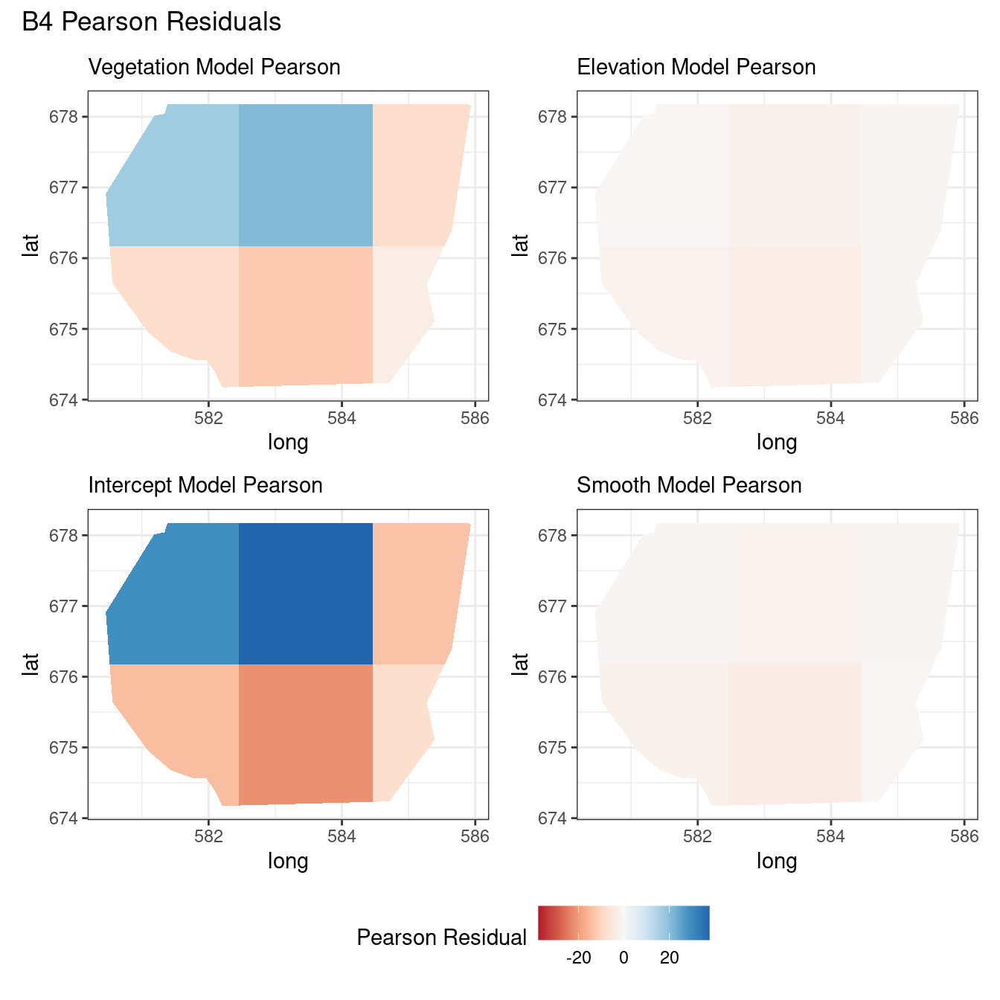
Discussion
Firstly, a common feature in each of the three figures is that the residual plots for the vegetation and intercept models are relatively similar and those of the elevation and smooth models are relatively similar as well for both resolutions for any type of residual. Also, for a fixed type of residual and a chosen model, the residuals are less extreme compared to the residuals, plausibly owing to the bias in the ``experimental” mode in . Another feature in all three types of residuals is that the elevation and intercept model have less extreme residual values compared to the vegetation and intercept models for a given type of residual. This could suggest that the former two are better models for gorilla nesting in the given region. The residual values have a wider range when than when .
For the scaling residuals and the Pearson residuals, the elevation and smooth models have less extreme values of residuals relative the vegetation and intercept models. This suggests that the elevation and smooth models are more suited to estimating the gorilla nesting locations in . Also, there is a significant underestimation in the north-west areas by the vegetation and intercept models while the same areas are not underestimated by the other two models. However, as explored in , these residuals are calculated in the ``experimental” mode of which produces some overestimates in these two models, so this must be kept in mind while reaching to conclusions about a suitable model for nesting locations.
For the inverse residuals, the same observations hold, except the residuals for the elevation and smooth models have residuals that are not significantly less extreme relative to the vegetation and intercept models as seen in the case of the Pearson and scaling residuals for both resolutions and .
Code appendix
Function definitions
# Niharika Reddy Peddinenikalva
# Vacation Scholarship project
suppressPackageStartupMessages(library("INLA"))
suppressPackageStartupMessages(library("inlabru"))
suppressPackageStartupMessages(library("RColorBrewer"))
suppressPackageStartupMessages(library("ggplot2"))
suppressPackageStartupMessages(library("dplyr"))
suppressPackageStartupMessages(library("lwgeom"))
suppressPackageStartupMessages(library("patchwork"))
suppressPackageStartupMessages(library("terra"))
suppressPackageStartupMessages(library("data.table"))
theme_set(theme_bw())
#' ----------------------------------
#' prepare_residual_calculations
#' ----------------------------------
#'
#' Computes the A_sum, A_integrate matrices and the data frame used for
#' calculating the residuals for the given set of polygons B
#' Input:
#' @param samplers A SpatialPolygonDataFrame containing partitions for which
#' residuals are to be calculated
#' @param domain A mesh object
#' @param observations A SpatialPointsDataFrame containing observed data
#'
#' Output:
#' @return A_sum - matrix used to compute the summation term of the residuals
#' @return A_integrate - matrix used to compute the integral term
#' @return df - SpatialPointsDataFrame containing all the locations 'u' for
#' calculating residuals
#'
prepare_residual_calculations <- function(samplers, domain, observations) {
# Calculate the integration weights for A_integrate
ips <- fm_int(domain = domain, samplers = samplers)
# Set-up the A_integrate matrix
# A_integrate has as many rows as polygons in the samplers,
# as many columns as mesh points
A_integrate <- inla.spde.make.A(
mesh = domain, ips, weights = ips$weight,
block = ips$.block, block.rescale = "none"
)
# Set-up the A_sum matrix
# A_sum has as many rows as polygons in the samplers,
# as many columns as observed points
# each row has 1s for the points in the corresponding polygon
idx <- sf::st_within(sf::st_as_sf(observations), sf::st_as_sf(samplers), sparse = TRUE)
A_sum <- sparseMatrix(
i = unlist(idx),
j = rep(
seq_len(nrow(observations)),
vapply(idx, length, 1L)
),
x = rep(1, length(unlist(idx))),
dims = c(nrow(samplers), nrow(observations))
)
# Setting up the data frame for calculating residuals
observations$obs <- TRUE
df <- SpatialPointsDataFrame(
coords = rbind(domain$loc[, 1:2], coordinates(observations)),
data = bind_rows(data.frame(obs = rep(FALSE, domain$n)), observations@data),
proj4string = fm_CRS(domain)
)
# Return A-sum, A_integrate and the data frame for predicting the residuals
list(A_sum = A_sum, A_integrate = A_integrate, df = df)
}
#' ------------
#' residual_df
#' ------------
#'
#' Computes the three types if residuals and returns a data frame containing
#' information about all 3 residuals for each partition of 'B'
#'
#' Inputs:
#' @param model fitted model for which residuals need to be calculated
#' @param df SpatialPointsDataFrame object containing all the locations 'u'
#' for calculating residuals
#' @param expr an expression object containing the formula of the model
#' @param A_sum matrix used to compute the summation term of the residuals
#' @param A_integrate matrix that computes the integral term of the residuals
#'
#' Outputs:
#' @return Data frame containing residual information for each of the
#' partitions of the subset 'B'
#'
residual_df <- function(model, df, expr, A_sum, A_integrate) {
# Compute residuals
res <- predict(
object = model,
newdata = df,
~ {
lambda <- eval(expr)
h1 <- lambda * 0 + 1
h2 <- 1 / lambda
h3 <- 1 / sqrt(lambda)
data.frame(
Scaling_Residuals =
as.vector(A_sum %*% h1[obs]) -
as.vector(A_integrate %*% (h1 * lambda)[!obs]),
Inverse_Residuals =
as.vector(A_sum %*% h2[obs]) -
as.vector(A_integrate %*% (h2 * lambda)[!obs]),
Pearson_Residuals =
as.vector(A_sum %*% h3[obs]) -
as.vector(A_integrate %*% (h3 * lambda)[!obs])
)
},
used = bru_used(expr)
)
# Label the three types of residuals
res$Scaling_Residuals$Type <- "Scaling Residuals"
res$Inverse_Residuals$Type <- "Inverse Residuals"
res$Pearson_Residuals$Type <- "Pearson Residuals"
do.call(rbind, res)
}
#' --------------
#' set_csc
#' --------------
#'
#' Sets the colour scale for the three types of residuals
#'
#' Inputs:
#' @param residuals frame containing residual information for each of the
#' partitions of the subset 'B'
#' @param col_theme vector of themes for each type of residual
#'
#' Outputs:
#' @return a list of 3 colour scales for each type of residual
#'
set_csc <- function(residuals, col_theme) {
# Store data for the colour scale of the plots for each type of residual
cscrange <- data.frame(
residuals %>%
group_by(Type) %>%
summarise(maxabs = max(abs(mean)))
)
# Set the colour scale for all three types of residuals
scaling_csc <-
scale_fill_gradientn(
colours = brewer.pal(9, col_theme[1]),
name = "Scaling Residual",
limits =
cscrange[cscrange$Type == "Scaling Residuals", 2] *
c(-1, 1)
)
inverse_csc <-
scale_fill_gradientn(
colours = brewer.pal(9, col_theme[2]),
name = "Inverse Residual",
limits =
cscrange[cscrange$Type == "Inverse Residuals", 2] *
c(-1, 1)
)
pearson_csc <-
scale_fill_gradientn(
colours = brewer.pal(9, col_theme[3]),
name = "Pearson Residual",
limits =
cscrange[cscrange$Type == "Pearson Residuals", 2] *
c(-1, 1)
)
list("Scaling" = scaling_csc, "Inverse" = inverse_csc, "Pearson" = pearson_csc)
}
#' ---------------
#' residual_plot
#' ---------------
#'
#' plots the three types of residuals for each polygon
#'
#' Input:
#' @param samplers A SpatialPolygonsDataFrame containing partitions for which
#' residuals are to be calculated
#' @param residuals frame containing residual information for each of the
#' partitions of the subset 'B'
#' @param csc list of three colour scales for the three types of residuals
#' @param model_name string containing the name of the model being assessed
#'
#' Output:
#' @return a list of three subplots scaling, inverse and Pearson residuals
#' for the different partitions of samplers
residual_plot <- function(samplers, residuals, csc, model_name) {
# Initialise the scaling residuals plot
samplers$Residual <- residuals %>%
filter(Type == "Scaling Residuals") %>%
pull(mean)
scaling <- ggplot() +
gg(samplers, aes(fill = Residual), alpha = 1, colour = NA) +
csc["Scaling"] +
theme(legend.position = "bottom") +
labs(subtitle = paste(model_name, "Scaling"))
# Initialise the inverse residuals plot
samplers$Residual <- residuals %>%
filter(Type == "Inverse Residuals") %>%
pull(mean)
inverse <- ggplot() +
gg(samplers, aes(fill = Residual), alpha = 1, colour = NA) +
csc["Inverse"] +
theme(legend.position = "bottom") +
labs(subtitle = paste(model_name, "Inverse"))
# Initialise the Pearson residuals plot
samplers$Residual <- residuals %>%
filter(Type == "Pearson Residuals") %>%
pull(mean)
pearson <- ggplot() +
gg(samplers, aes(fill = Residual), alpha = 1, colour = NA) +
csc["Pearson"] +
theme(legend.position = "bottom") +
labs(subtitle = paste(model_name, "Pearson"))
# Return the three plots in a list
list(
Scaling = scaling, Inverse = inverse,
Pearson = pearson
)
}
#' ------------------
#' partition
#' ------------------
#'
#' Partitions the region based on the given criteria for calculating residuals
#' in each partition. Parts of this function are taken from concepts in
#' https://rpubs.com/huanfaChen/grid_from_polygon
#'
#' Input:
#' @param samplers A SpatialPolygonsDataFrame containing region for which
#' partitions need to be created
#' @param resolution resolution of the grids that are required
#' @param nrows number of rows of grids that are required
#' @param ncols number of columns of grids that are required
#'
#' Output:
#' @return a partitioned SpatialPolygonsDataFrame as required
#'
#'
partition <- function(samplers, resolution = NULL, nrows = NULL, ncols = NULL) {
# Create a grid for the given boundary
if (is.null(resolution)) {
grid <- rast(terra::ext(samplers),
crs = proj4string(samplers),
nrows = nrows, ncols = ncols
)
}
if (is.null(c(nrows, ncols))) {
grid <- rast(terra::ext(samplers),
crs = proj4string(samplers),
resolution = resolution
)
}
gridPolygon <- terra::as.polygons(grid)
# Extract the boundary with subpolygons only
sf::as_Spatial(sf::st_as_sf(terra::intersect(gridPolygon, terra::vect(samplers))))
}
#' ------------------
#' edit_df
#' ------------------
#'
#' Edits the residual data frames to remove columns that need not be displayed
#'
#' Input:
#' @param df the data frame which needs to be edited
#' @param columns a vector of columns that need to be deleted from df
#'
#' Output:
#' @return the edited data frame with only the desired columns
#'
#'
edit_df <- function(df, columns) {
# Remove the columns that are not required
df[, !(colnames(df) %in% columns)]
}